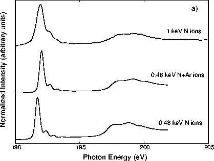

Figure 1a: a) B K-edge x-ray absorption
spectra for three BN/Si films. The x-ray flux was directed
onto the films at normal incidence. Notice the 3 small peaks
between the pi* peak at 192.0 eV and the onset of
the sigma* band at 197 eV. b) B K-edge
spectra for hBN, cBN, and rBN powders.